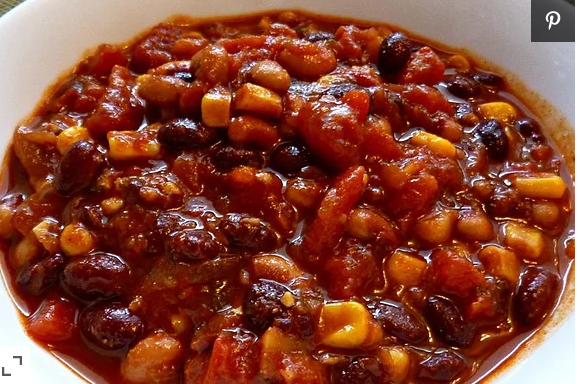

Vegan Chili

How to make Vegan Chili
Great for those cold days indoors, Goes great wit some Cornbread.
- 1 Tablespoon canola oil
- 1 large green bell pepper, diced
- 1 large onion, diced
- 2 jalapeno peppers, chopped
- 1/4 cup chili powder
- 1 1/2 teaspoons salt
- 1/2 teaspoonn ground cumin
- 2 cloves garlic, minced
- 1 can crushed tomatoes
- 1 can black beans
- 1 1/2 cups water
- 1 cup rinsed, uncooked white rice
- 1/2 teaspoon ground black pepper
- 1 package shredded mozzarella-style vegan chees
- Heat oil in pot over medium-high heat. Saute bell pepper, onion, and jalapeno peppers
until tender, about 3 minutes. Add Chili powder, salt, cumin, and garlic. Cook,
stirring occasionally, for about 10 minutes, making sure chili powder does not burn.
- Stir tomatoes, beans, water, and rice into the pot. Bring to a boil. Reduce heat to low,
Cover, and simmer until rice is fully cooked, about 20 minutes. Check every 10 to 15 minutes
if extra wate is needed: add 1/4 cup at a time.
- Stir corn and pepper into the chili and cook until heated through, about 5 minutes.
Serve with vegan cheese.